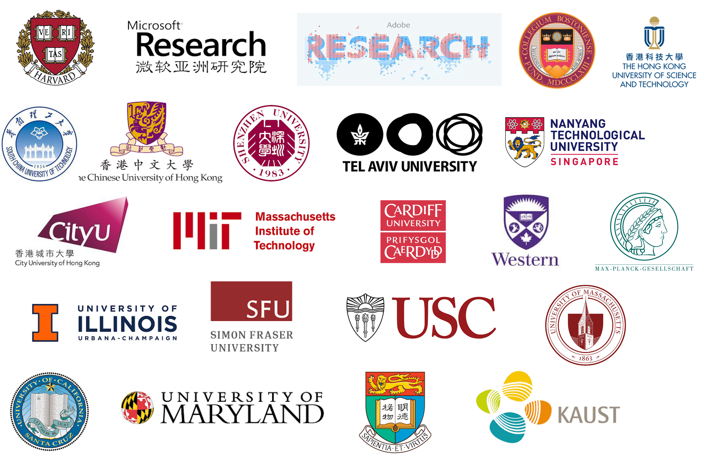

I am a Research Scientist at Adobe Research (A cute chat 💬). I was previously an Assistant Professor in the Department of Computer Science, University of Bath, and fortunate to work as a Postdoctoral Researcher at MMLab@The Chinese University of Hong Kong, advised by Prof. Dahua Lin. I received my Ph.D. degree from the Department of Computer Science, City University of Hong Kong under the supervision of Prof. Rynson W.H. Lau. During my Ph.D. study, I was lucky to be a visiting scholar at VCG@Harvard University under the supervision of Prof. Hanspeter Pfister, and closely collaborated with Zoya Bylinskii from Adobe Research. I was also lucky to work with Steve Lin and Zhirong Wu as an intern at Microsoft Research Asia (MSRA).
My research lies in the areas of computer graphics, computer vision/machine learning, and human-computer interaction.
Recently I am interested in using data wisely for content generation & editing and data-driven graphic design. I am more focus on multi-modal control for customizing pixels, vectors, and 3D shapes.
We are actively looking for research interns. If you are interested in doing research project(s) at Adobe or remote collaboration with me, please drop me an email with your CV.
- PG 2026 Poster Chair
- 3DV 2026 Area Chair
- CG&A Associate Editor
- SIGGRAPH 2025 Paper Committee (AC)
- SIGGRAPH Asia 2024 Couse Committee
- SIGGRAPH 2024 Paper Committee (AC)
- SIGGRAPH Asia 2023 Paper Committee (AC)
Filter by Research Area (select multiple):


SUGAR: Subject-Driven Video Customization in a Zero-Shot Manner
Yufan Zhou, Ruiyi Zhang, Jiuxiang Gu, Nanxuan Zhao, Jing Shi, Tong Sun
Project arXiv (Tech Report)

UniReal: Universal Image Generation and Editing via Learning Real-world Dynamics
Xi Chen, Zhifei Zhang, He Zhang, Yuqian Zhou, Soo Ye Kim, Qing Liu, Yijun Li, Jianming Zhang, Nanxuan Zhao, Yilin Wang, Hui Ding, Zhe Lin, Hengshuang Zhao
Computer Vision and Pattern Recognition (CVPR), 2025 (Highlight)
Project arXiv

Comprehensive Relighting: Generalizable and Consistent Monocular Human Relighting and Harmonization
Junying Wang, Jingyuan Liu, Xin Sun, Krishna Kumar Singh, Zhixin Shu, He Zhang, Jimei Yang, Nanxuan Zhao, Tuanfeng Y. Wang, Simon S. Chen, Ulrich Neumann, Jae Shin Yoon
Computer Vision and Pattern Recognition (CVPR), 2025
Project arXiv

GroupDiff: Diffusion-based Group Portrait Editing
Yuming Jiang, Nanxuan Zhao#, Qing Liu, Krishna kumar Singh, Shuai Yang, Chen Change Loy, Ziwei Liu
European Conference on Computer Vision (ECCV), 2024
arXiv
IntrinsicDiffusion: Joint Intrinsic Layers From Latent Diffusion Models
Jundan Luo, Duygu Ceylan, Jae Shin Yoon, Nanxuan Zhao, Julien Philip, Anna Frühstück, Wenbin Li, Christian Richardt, Tuanfeng Wang
Siggraph 2024
Project
Visual Layout Composer: Image-Vector Dual Diffusion Model for Design Layout Generation
Mohammad Amin Shabani, Zhaowen Wang, Difan Liu, Nanxuan Zhao, Jimei Yang, Yasutaka Furukawa
Computer Vision and Pattern Recognition (CVPR), 2024
Project

Localizing and Editing Knowledge in Text-to-Image Generative Models
Samyadeep Basu, Nanxuan Zhao, Vlad Morariu, Soheil Feizi, Varun Manjunatha
International Conference on Learning Representations (ICLR) 2023
arXiv


FashionTex: Controllable Virtual Try-on with Text and Texture
Anran Lin, Nanxuan Zhao, Shuliang Ning, Yuda Qiu, Baoyuan Wang, Xiaoguang Han
SIGGRAPH 2023
arXiv

Neural Preset for Color Style Transfer
Zhanghan Ke, Yuhao Liu, Lei Zhu, Nanxuan Zhao, Rynson W.H. Lau
Computer Vision and Pattern Recognition (CVPR), 2023
arXiv Project Code Online Demo IOS App


-
